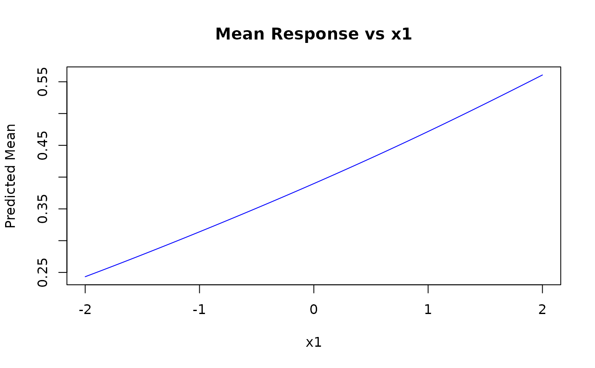
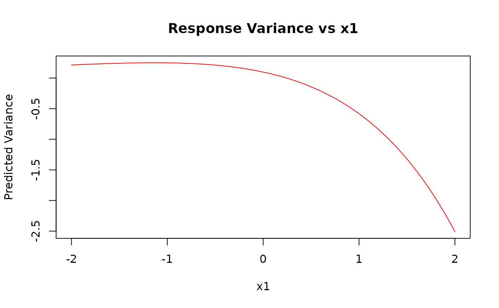
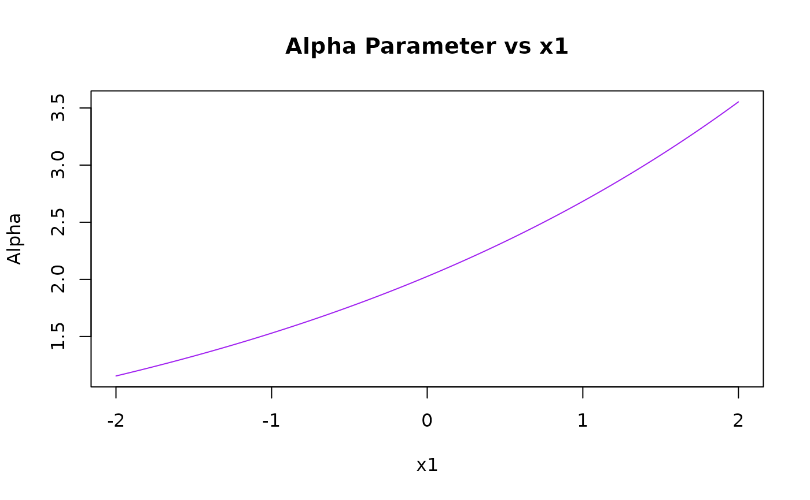
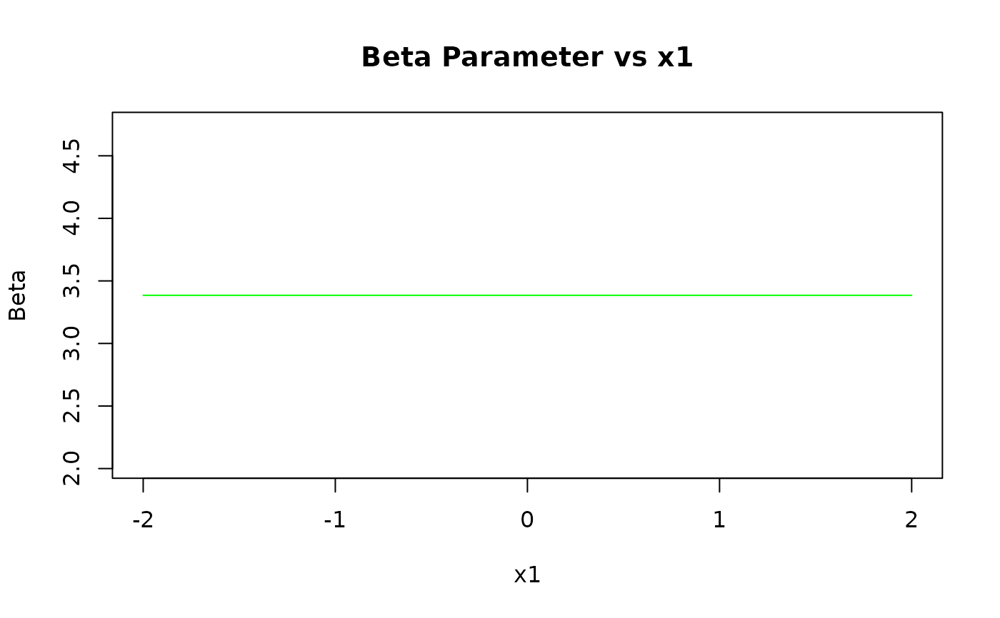
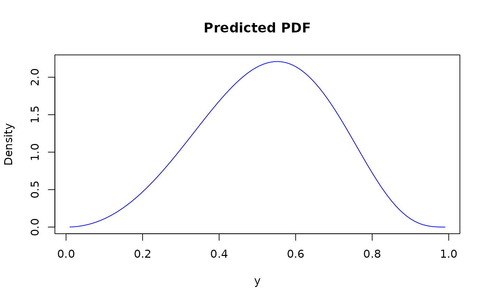
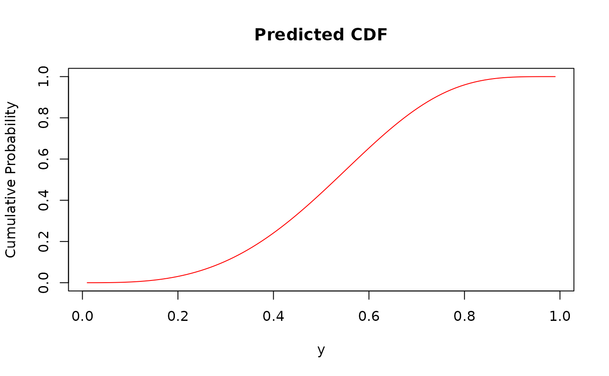
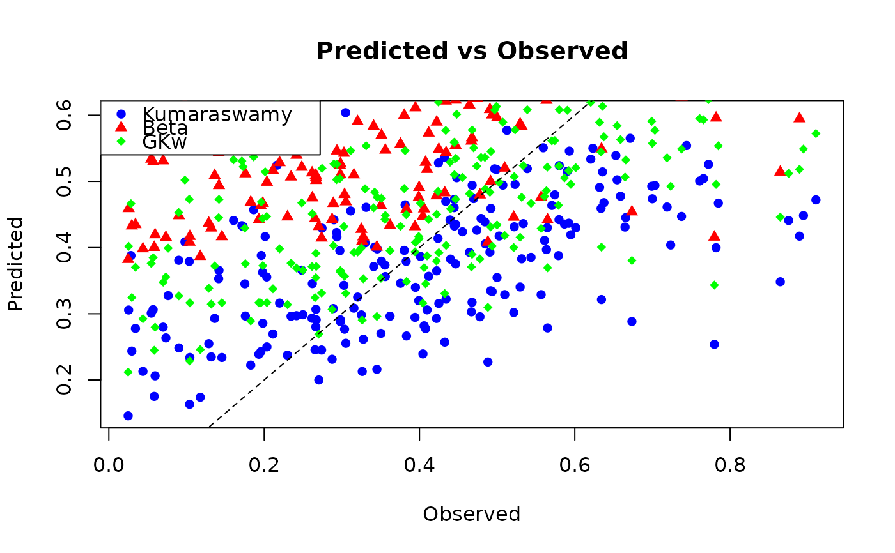
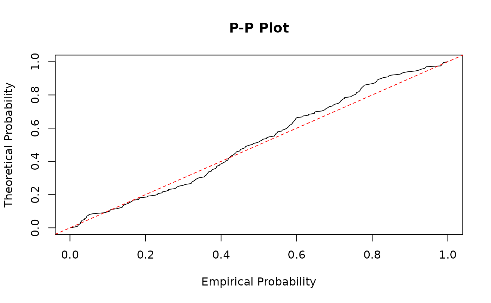

Predictions from a Fitted Generalized Kumaraswamy Regression Model
Source:R/gkwreg-predict.R
predict.gkwreg.RdComputes predictions and related quantities from a fitted Generalized Kumaraswamy (GKw) regression model object. This method can extract fitted values, predicted means, linear predictors, parameter values, variances, densities, probabilities, and quantiles based on the estimated model. Predictions can be made for new data or for the original data used to fit the model.
Arguments
- object
An object of class
"gkwreg", typically the result of a call togkwreg.- newdata
An optional data frame containing the variables needed for prediction. If omitted, predictions are made for the data used to fit the model.
- type
A character string specifying the type of prediction. Options are:
"response"or"mean"Predicted mean response (default).
"link"Linear predictors for each parameter before applying inverse link functions.
"parameter"Parameter values on their original scale (after applying inverse link functions).
"alpha","beta","gamma","delta","lambda"Values for a specific distribution parameter.
"variance"Predicted variance of the response.
"density"or"pdf"Density function values at points specified by
at."probability"or"cdf"Cumulative distribution function values at points specified by
at."quantile"Quantiles corresponding to probabilities specified by
at.
- na.action
Function determining how to handle missing values in
newdata. Default isstats::na.pass, which returnsNAfor cases with missing predictors.- at
Numeric vector of values at which to evaluate densities, probabilities, or for which to compute quantiles, depending on
type. Required fortype = "density",type = "probability", ortype = "quantile". Defaults to 0.5.- elementwise
Logical. If
TRUEandathas the same length as the number of observations, applies each value inatto the corresponding observation. IfFALSE(default), applies all values inatto each observation, returning a matrix.- family
Character string specifying the distribution family to use for calculations. If
NULL(default), uses the family from the fitted model. Options match those ingkwreg:"gkw","bkw","kkw","ekw","mc","kw","beta".- ...
Additional arguments (currently not used).
Value
The return value depends on the type argument:
For
type = "response",type = "variance", or individual parameters (type = "alpha", etc.): A numeric vector of length equal to the number of rows innewdata(or the original data).For
type = "link"ortype = "parameter": A data frame with columns for each parameter and rows corresponding to observations.For
type = "density",type = "probability", ortype = "quantile":If
elementwise = TRUE: A numeric vector of length equal to the number of rows innewdata(or the original data).If
elementwise = FALSE: A matrix where rows correspond to observations and columns correspond to the values inat.
Details
The predict.gkwreg function provides a flexible framework for obtaining
predictions and inference from fitted Generalized Kumaraswamy regression models.
It handles all subfamilies of GKw distributions and respects the parametrization
and link functions specified in the original model.
Prediction Types
The function supports several types of predictions:
Response/Mean: Computes the expected value of the response variable based on the model parameters. For most GKw family distributions, this requires numerical integration or special formulas.
Link: Returns the linear predictors for each parameter without applying inverse link functions. These are the values \(\eta_j = X\beta_j\) for each parameter \(j\).
Parameter: Computes the distribution parameter values on their original scale by applying the appropriate inverse link functions to the linear predictors. For example, if alpha uses a log link, then \(\alpha = \exp(X\beta_\alpha)\).
Individual Parameters: Extract specific parameter values (alpha, beta, gamma, delta, lambda) on their original scale.
Variance: Estimates the variance of the response based on the model parameters. For some distributions, analytical formulas are used; for others, numerical approximations are employed.
Density/PDF: Evaluates the probability density function at specified points given the model parameters.
Probability/CDF: Computes the cumulative distribution function at specified points given the model parameters.
Quantile: Calculates quantiles corresponding to specified probabilities given the model parameters.
Link Functions
The function respects the link functions specified in the original model for each parameter. The supported link functions are:
"log": \(g(\mu) = \log(\mu)\), \(g^{-1}(\eta) = \exp(\eta)\)"logit": \(g(\mu) = \log(\mu/(1-\mu))\), \(g^{-1}(\eta) = 1/(1+\exp(-\eta))\)"probit": \(g(\mu) = \Phi^{-1}(\mu)\), \(g^{-1}(\eta) = \Phi(\eta)\)"cauchy": \(g(\mu) = \tan(\pi*(\mu-0.5))\), \(g^{-1}(\eta) = 0.5 + (1/\pi) \arctan(\eta)\)"cloglog": \(g(\mu) = \log(-\log(1-\mu))\), \(g^{-1}(\eta) = 1 - \exp(-\exp(\eta))\)"identity": \(g(\mu) = \mu\), \(g^{-1}(\eta) = \eta\)"sqrt": \(g(\mu) = \sqrt{\mu}\), \(g^{-1}(\eta) = \eta^2\)"inverse": \(g(\mu) = 1/\mu\), \(g^{-1}(\eta) = 1/\eta\)"inverse-square": \(g(\mu) = 1/\sqrt{\mu}\), \(g^{-1}(\eta) = 1/\eta^2\)
Family-Specific Constraints
The function enforces appropriate constraints for each distribution family:
"gkw": All 5 parameters (\(\alpha, \beta, \gamma, \delta, \lambda\)) are used."bkw": \(\lambda = 1\) is fixed."kkw": \(\gamma = 1\) is fixed."ekw": \(\gamma = 1, \delta = 0\) are fixed."mc": \(\alpha = 1, \beta = 1\) are fixed."kw": \(\gamma = 1, \delta = 0, \lambda = 1\) are fixed."beta": \(\alpha = 1, \beta = 1, \lambda = 1\) are fixed.
Parameter Bounds
All parameters are constrained to their valid ranges:
\(\alpha, \beta, \gamma, \lambda > 0\)
\(0 < \delta < 1\)
Using with New Data
When providing newdata, ensure it contains all variables used in the model's
formula. The function extracts the terms for each parameter's model matrix and applies
the appropriate link functions to calculate predictions. If any variables are missing,
the function will attempt to substitute reasonable defaults or raise an error if
critical variables are absent.
References
Cordeiro, G. M., & de Castro, M. (2011). A new family of generalized distributions. Journal of Statistical Computation and Simulation, 81(7), 883-898.
Kumaraswamy, P. (1980). A generalized probability density function for double-bounded random processes. Journal of Hydrology, 46(1-2), 79-88.
Ferrari, S. L. P., & Cribari-Neto, F. (2004). Beta regression for modelling rates and proportions. Journal of Applied Statistics, 31(7), 799-815.
Jones, M. C. (2009). Kumaraswamy's distribution: A beta-type distribution with some tractability advantages. Statistical Methodology, 6(1), 70-81.
See also
gkwreg for fitting Generalized Kumaraswamy regression models,
fitted.gkwreg for extracting fitted values,
residuals.gkwreg for calculating residuals,
summary.gkwreg for model summaries,
coef.gkwreg for extracting coefficients.
Examples
# \donttest{
# Generate a sample dataset (n = 1000)
library(gkwdist)
set.seed(123)
n <- 1000
# Create predictors
x1 <- runif(n, -2, 2)
x2 <- rnorm(n)
x3 <- factor(rbinom(n, 1, 0.4))
# Simulate Kumaraswamy distributed data
# True parameters with specific relationships to predictors
true_alpha <- exp(0.7 + 0.3 * x1)
true_beta <- exp(1.2 - 0.2 * x2 + 0.4 * (x3 == "1"))
# Generate random responses
y <- rkw(n, alpha = true_alpha, beta = true_beta)
# Ensure responses are strictly in (0, 1)
y <- pmax(pmin(y, 1 - 1e-7), 1e-7)
# Create data frame
df <- data.frame(y = y, x1 = x1, x2 = x2, x3 = x3)
# Split into training and test sets
set.seed(456)
train_idx <- sample(n, 800)
train_data <- df[train_idx, ]
test_data <- df[-train_idx, ]
# ====================================================================
# Example 1: Basic usage - Fit a Kumaraswamy model and make predictions
# ====================================================================
# Fit the model
kw_model <- gkwreg(y ~ x1 | x2 + x3, data = train_data, family = "kw")
# Predict mean response for test data
pred_mean <- predict(kw_model, newdata = test_data, type = "response")
# Calculate prediction error
mse <- mean((test_data$y - pred_mean)^2)
cat("Mean Squared Error:", mse, "\n")
#> Mean Squared Error: 0.02982227
# ====================================================================
# Example 2: Different prediction types
# ====================================================================
# Create a grid of values for visualization
x1_grid <- seq(-2, 2, length.out = 100)
grid_data <- data.frame(x1 = x1_grid, x2 = 0, x3 = 0)
# Predict different quantities
pred_mean <- predict(kw_model, newdata = grid_data, type = "response")
pred_var <- predict(kw_model, newdata = grid_data, type = "variance")
pred_params <- predict(kw_model, newdata = grid_data, type = "parameter")
pred_alpha <- predict(kw_model, newdata = grid_data, type = "alpha")
pred_beta <- predict(kw_model, newdata = grid_data, type = "beta")
# Plot predicted mean and parameters against x1
plot(x1_grid, pred_mean,
type = "l", col = "blue",
xlab = "x1", ylab = "Predicted Mean", main = "Mean Response vs x1"
)

plot(x1_grid, pred_var,
type = "l", col = "red",
xlab = "x1", ylab = "Predicted Variance", main = "Response Variance vs x1"
)

plot(x1_grid, pred_alpha,
type = "l", col = "purple",
xlab = "x1", ylab = "Alpha", main = "Alpha Parameter vs x1"
)

plot(x1_grid, pred_beta,
type = "l", col = "green",
xlab = "x1", ylab = "Beta", main = "Beta Parameter vs x1"
)

# ====================================================================
# Example 3: Computing densities, CDFs, and quantiles
# ====================================================================
# Select a single observation
obs_data <- test_data[1, ]
# Create a sequence of y values for plotting
y_seq <- seq(0.01, 0.99, length.out = 100)
# Compute density at each y value
dens_values <- predict(kw_model,
newdata = obs_data,
type = "density", at = y_seq, elementwise = FALSE
)
# Compute CDF at each y value
cdf_values <- predict(kw_model,
newdata = obs_data,
type = "probability", at = y_seq, elementwise = FALSE
)
# Compute quantiles for a sequence of probabilities
prob_seq <- seq(0.1, 0.9, by = 0.1)
quant_values <- predict(kw_model,
newdata = obs_data,
type = "quantile", at = prob_seq, elementwise = FALSE
)
# Plot density and CDF
plot(y_seq, dens_values,
type = "l", col = "blue",
xlab = "y", ylab = "Density", main = "Predicted PDF"
)

plot(y_seq, cdf_values,
type = "l", col = "red",
xlab = "y", ylab = "Cumulative Probability", main = "Predicted CDF"
)

# ====================================================================
# Example 4: Prediction under different distributional assumptions
# ====================================================================
# Fit models with different families
beta_model <- gkwreg(y ~ x1 | x2 + x3, data = train_data, family = "beta")
gkw_model <- gkwreg(y ~ x1 | x2 + x3 | 1 | 1 | x3, data = train_data, family = "gkw")
# Predict means using different families
pred_kw <- predict(kw_model, newdata = test_data, type = "response")
pred_beta <- predict(beta_model, newdata = test_data, type = "response")
pred_gkw <- predict(gkw_model, newdata = test_data, type = "response")
# Calculate MSE for each family
mse_kw <- mean((test_data$y - pred_kw)^2)
mse_beta <- mean((test_data$y - pred_beta)^2)
mse_gkw <- mean((test_data$y - pred_gkw)^2)
cat("MSE by family:\n")
#> MSE by family:
cat("Kumaraswamy:", mse_kw, "\n")
#> Kumaraswamy: 0.02982227
cat("Beta:", mse_beta, "\n")
#> Beta: 0.06684878
cat("GKw:", mse_gkw, "\n")
#> GKw: 0.03221942
# Compare predictions from different families visually
plot(test_data$y, pred_kw,
col = "blue", pch = 16,
xlab = "Observed", ylab = "Predicted", main = "Predicted vs Observed"
)
points(test_data$y, pred_beta, col = "red", pch = 17)
points(test_data$y, pred_gkw, col = "green", pch = 18)
abline(0, 1, lty = 2)
legend("topleft",
legend = c("Kumaraswamy", "Beta", "GKw"),
col = c("blue", "red", "green"), pch = c(16, 17, 18)
)

# ====================================================================
# Example 5: Working with linear predictors and link functions
# ====================================================================
# Extract linear predictors and parameter values
lp <- predict(kw_model, newdata = test_data, type = "link")
params <- predict(kw_model, newdata = test_data, type = "parameter")
# Verify that inverse link transformation works correctly
# For Kumaraswamy model, alpha and beta use log links by default
alpha_from_lp <- exp(lp$alpha)
beta_from_lp <- exp(lp$beta)
# Compare with direct parameter predictions
cat("Manual inverse link vs direct parameter prediction:\n")
#> Manual inverse link vs direct parameter prediction:
cat("Alpha difference:", max(abs(alpha_from_lp - params$alpha)), "\n")
#> Alpha difference: 0
cat("Beta difference:", max(abs(beta_from_lp - params$beta)), "\n")
#> Beta difference: 0
# ====================================================================
# Example 6: Elementwise calculations
# ====================================================================
# Generate probabilities specific to each observation
probs <- runif(nrow(test_data), 0.1, 0.9)
# Calculate quantiles for each observation at its own probability level
quant_elementwise <- predict(kw_model,
newdata = test_data,
type = "quantile", at = probs, elementwise = TRUE
)
# Calculate probabilities at each observation's actual value
prob_at_y <- predict(kw_model,
newdata = test_data,
type = "probability", at = test_data$y, elementwise = TRUE
)
# Create Q-Q plot
plot(sort(prob_at_y), seq(0, 1, length.out = length(prob_at_y)),
xlab = "Empirical Probability", ylab = "Theoretical Probability",
main = "P-P Plot", type = "l"
)
abline(0, 1, lty = 2, col = "red")

# ====================================================================
# Example 7: Predicting for the original data
# ====================================================================
# Fit a model with original data
full_model <- gkwreg(y ~ x1 + x2 + x3 | x1 + x2 + x3, data = df, family = "kw")
# Get fitted values using predict and compare with model's fitted.values
fitted_from_predict <- predict(full_model, type = "response")
fitted_from_model <- full_model$fitted.values
# Compare results
cat(
"Max difference between predict() and fitted.values:",
max(abs(fitted_from_predict - fitted_from_model)), "\n"
)
#> Max difference between predict() and fitted.values: 0
# ====================================================================
# Example 8: Handling missing data
# ====================================================================
# Create test data with some missing values
test_missing <- test_data
test_missing$x1[1:5] <- NA
test_missing$x2[6:10] <- NA
# Predict with different na.action options
pred_na_pass <- tryCatch(
predict(kw_model, newdata = test_missing, na.action = na.pass),
error = function(e) rep(NA, nrow(test_missing))
)
pred_na_omit <- tryCatch(
predict(kw_model, newdata = test_missing, na.action = na.omit),
error = function(e) rep(NA, nrow(test_missing))
)
# Show which positions have NAs
cat("Rows with missing predictors:", which(is.na(pred_na_pass)), "\n")
#> Rows with missing predictors:
cat("Length after na.omit:", length(pred_na_omit), "\n")
#> Length after na.omit: 195
# }